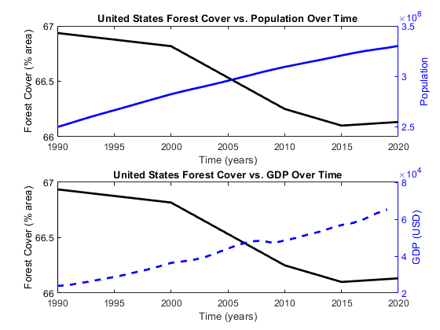
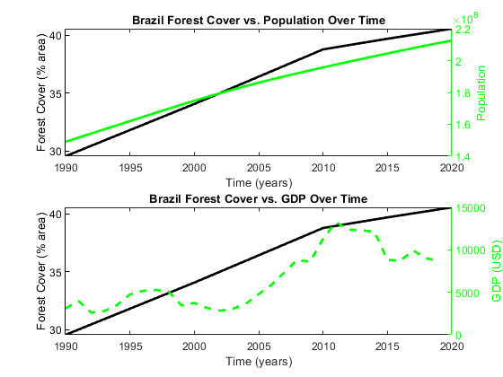
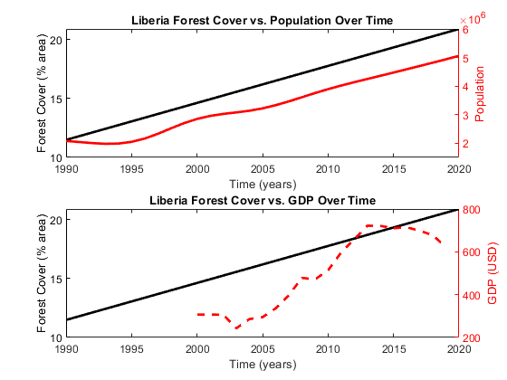
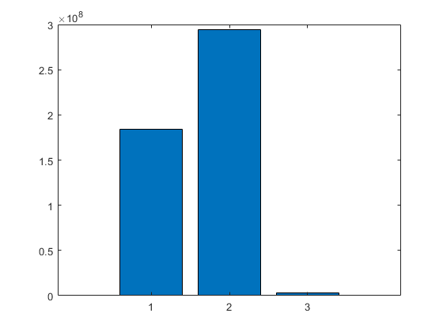
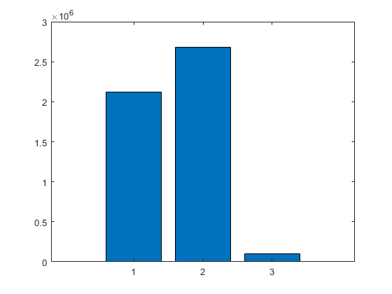
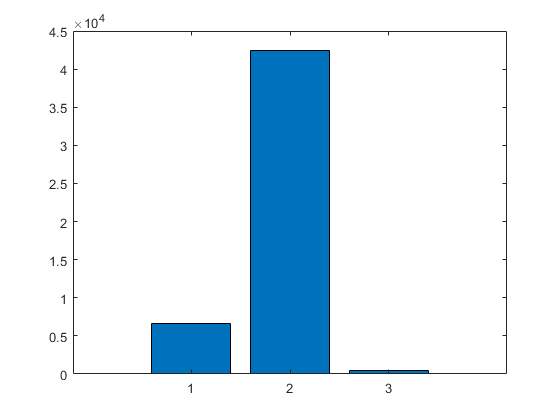
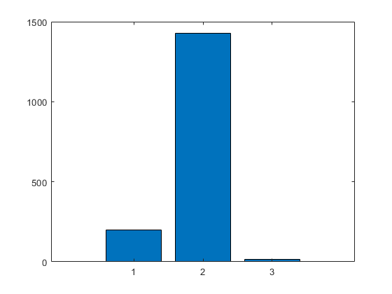
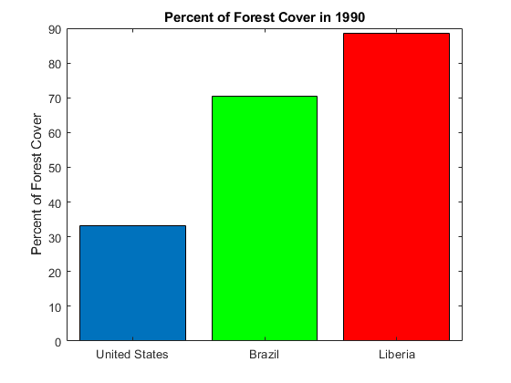
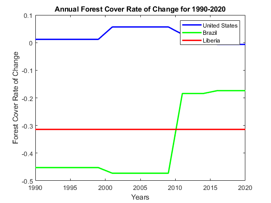

Contents
% forest = black, pop = country color, gdp = country color, dashed % US = Blue, Brazil = green, Liberia = Red % order = US, BRA, LIB % LineWidth % Emily 2,3 % Finn 4,5 % Daria 6,7 % Paul 8,9
Reading in Land Cover Data
filename = 'forest-area-as-share-of-land-area.csv'; ForestTable = readtable(filename); Countries = ForestTable.Entity; idx = find(strcmp('Brazil', Countries)); Forest_BRA = table2array(ForestTable(idx, 4)); idx = find(strcmp('United States', Countries)); Forest_US = table2array(ForestTable(idx, 3:4)); idx = find(Forest_US(:,1) >= 1990); Forest_US = Forest_US(idx,2); idx = find(strcmp('Liberia', Countries)); Forest_LIB = table2array(ForestTable(idx, 4));
Warning: Column headers from the file were modified to make them valid MATLAB identifiers before creating variable names for the table. The original column headers are saved in the VariableDescriptions property. Set 'PreserveVariableNames' to true to use the original column headers as table variable names.
Population Data
filename = 'Pop_Data.csv';
PopTable = readtable(filename);
years = 1990:1:2020;
years = years';
Pop_BRA = table2array(PopTable(1,5:35))';
Pop_US = table2array(PopTable(3,5:35))';
Pop_LIB = table2array(PopTable(2,5:35))';
Warning: Column headers from the file were modified to make them valid MATLAB identifiers before creating variable names for the table. The original column headers are saved in the VariableDescriptions property. Set 'PreserveVariableNames' to true to use the original column headers as table variable names.
GDP Data
filename = 'GDPpercapita.csv';
GDPTable = readtable(filename);
GDP_BRA = table2array(GDPTable(1,5:34))';
GDP_US = table2array(GDPTable(3,5:34))';
GDP_LIB = table2array(GDPTable(2,5:34))';
Warning: Column headers from the file were modified to make them valid MATLAB identifiers before creating variable names for the table. The original column headers are saved in the VariableDescriptions property. Set 'PreserveVariableNames' to true to use the original column headers as table variable names.
Preliminary Data Analysis
Forest Cover Basic Statistics
F_Av_BRA = mean(Forest_BRA); F_Av_US = mean(Forest_US); F_Av_LIB = mean(Forest_LIB); F_Rate_BRA = gradient(Forest_BRA); F_Rate_US = gradient(Forest_US); F_Rate_LIB = gradient(Forest_LIB); F_Rate_Av_BRA = mean(F_Rate_BRA); F_Rate_Av_US = mean(F_Rate_US); F_Rate_Av_LIB = mean(F_Rate_LIB); %For F_DecAvs, the rows are Brazil, US, and Liberia in order from top to bottom and the columns are 1990s, 2000s, and 2010s in order from left to right % the 2010s includes data from 2020 F_DecAvs = NaN(3,3); for i = 1:3 if i == 1 idx = 1:10; F_DecAvs(1,1) = mean(Forest_BRA(idx)); F_DecAvs(2,1) = mean(Forest_US(idx)); F_DecAvs(3,1) = mean(Forest_LIB(idx)); end if i == 2 idx = 11:20; F_DecAvs(1,2) = mean(Forest_BRA(idx)); F_DecAvs(2,2) = mean(Forest_US(idx)); F_DecAvs(3,2) = mean(Forest_LIB(idx)); end if i == 3 idx = 21:31; F_DecAvs(1,3) = mean(Forest_BRA(idx)); F_DecAvs(2,3) = mean(Forest_US(idx)); F_DecAvs(3,3) = mean(Forest_LIB(idx)); end end
Population Basic Statistics
P_Av_BRA = mean(Pop_BRA); P_Av_US = mean(Pop_US); P_Av_LIB = mean(Pop_LIB); Pop_Rate_BRA = gradient(Pop_BRA); Pop_Rate_US = gradient(Pop_US); Pop_Rate_LIB = gradient(Pop_LIB); Pop_Rate_Av_BRA = mean(Pop_Rate_BRA); Pop_Rate_Av_US = mean(Pop_Rate_US); Pop_Rate_Av_LIB = mean(Pop_Rate_LIB); %For Pop_DecAvs, the rows are Brazil, US, and Liberia in order from top to bottom and the columns are 1990s, 2000s, and 2010s from left to right % the 2010s includes data from 2020 Pop_DecAvs = NaN(3,3); for i = 1:3 if i == 1 idx = 1:10; Pop_DecAvs(1,1) = mean(Pop_BRA(idx)); Pop_DecAvs(2,1) = mean(Pop_US(idx)); Pop_DecAvs(3,1) = mean(Pop_LIB(idx)); end if i == 2 idx = 11:20; Pop_DecAvs(1,2) = mean(Pop_BRA(idx)); Pop_DecAvs(2,2) = mean(Pop_US(idx)); Pop_DecAvs(3,2) = mean(Pop_LIB(idx)); end if i == 3 idx = 21:31; Pop_DecAvs(1,3) = mean(Pop_BRA(idx)); Pop_DecAvs(2,3) = mean(Pop_US(idx)); Pop_DecAvs(3,3) = mean(Pop_LIB(idx)); end end
GDP Basic Statistics
years_GDP = 1990:1:2019 GDP_Av_BRA = mean(GDP_BRA); GDP_Av_US = mean(GDP_US); GDP_Av_LIB = nanmean(GDP_LIB); GDP_Rate_BRA = gradient(GDP_BRA); GDP_Rate_US = gradient(GDP_US); GDP_Rate_LIB = gradient(GDP_LIB); GDP_Rate_Av_BRA = mean(GDP_Rate_BRA); GDP_Rate_Av_US = mean(GDP_Rate_US); GDP_Rate_Av_LIB = nanmean(GDP_Rate_LIB); % For GDP_DecAvs, the rows are Brazil, US, and Liberia in order from top to % bottom and the columns are 1990s, 2000s, and 2010s from left to right % the 2010s does not include data from 2020 % missing data for Liberia during 1990s GDP_DecAvs = NaN(3,3); for i = 1:3 if i == 1 idx = 1:10; GDP_DecAvs(1,1) = mean(GDP_BRA(idx)); GDP_DecAvs(2,1) = mean(GDP_US(idx)); GDP_DecAvs(3,1) = mean(GDP_LIB(idx)); end if i == 2 idx = 11:20; GDP_DecAvs(1,2) = mean(GDP_BRA(idx)); GDP_DecAvs(2,2) = mean(GDP_US(idx)); GDP_DecAvs(3,2) = mean(GDP_LIB(idx)); end if i == 3 idx = 21:30; GDP_DecAvs(1,3) = mean(GDP_BRA(idx)); GDP_DecAvs(2,3) = mean(GDP_US(idx)); GDP_DecAvs(3,3) = mean(GDP_LIB(idx)); end end
years_GDP =
Columns 1 through 6
1990 1991 1992 1993 1994 1995
Columns 7 through 12
1996 1997 1998 1999 2000 2001
Columns 13 through 18
2002 2003 2004 2005 2006 2007
Columns 19 through 24
2008 2009 2010 2011 2012 2013
Columns 25 through 30
2014 2015 2016 2017 2018 2019
figure (1); clf newcolors1 = [0 0 0; 0 0 1]; colororder(newcolors1) subplot(2,1,1) yyaxis left plot(years, (100-Forest_US), 'k', 'LineWidth', 2) title('United States Forest Cover vs. Population Over Time'); xlabel('Time (years)'); ylabel('Forest Cover (% area)'); yyaxis right plot(years, Pop_US, 'b', 'LineWidth', 2) ylabel('Population'); hold on subplot(2,1,2) yyaxis left plot(years, (100-Forest_US), 'k', 'LineWidth', 2) title('United States Forest Cover vs. GDP Over Time'); xlabel('Time (years)'); ylabel('Forest Cover (% area)'); yyaxis right plot(years_GDP, GDP_US, '--b', 'LineWidth', 2) ylabel('GDP (USD)'); figure (2) newcolors2 = [0 0 0; 0 1 0]; colororder(newcolors2) subplot(2,1,1) yyaxis left plot(years, (100-Forest_BRA), 'k', 'LineWidth', 2) title('Brazil Forest Cover vs. Population Over Time'); xlabel('Time (years)'); ylabel('Forest Cover (% area)'); yyaxis right plot(years, Pop_BRA, 'g', 'LineWidth', 2) ylabel('Population'); hold on subplot(2,1,2) yyaxis left plot(years, (100-Forest_BRA), 'k', 'LineWidth', 2) title('Brazil Forest Cover vs. GDP Over Time'); xlabel('Time (years)'); ylabel('Forest Cover (% area)'); yyaxis right plot(years_GDP, GDP_BRA, '--g', 'LineWidth', 2) ylabel('GDP (USD)'); figure (3); clf newcolors3 = [0 0 0; 1 0 0]; colororder(newcolors3) subplot(2,1,1) yyaxis left plot(years, (100-Forest_LIB), 'k', 'LineWidth', 2) title('Liberia Forest Cover vs. Population Over Time'); xlabel('Time (years)'); ylabel('Forest Cover (% area)'); yyaxis right plot(years, Pop_LIB, 'r', 'LineWidth', 2) ylabel('Population'); hold on subplot(2,1,2) yyaxis left plot(years, (100-Forest_LIB), 'k', 'LineWidth', 2) title('Liberia Forest Cover vs. GDP Over Time'); xlabel('Time (years)'); ylabel('Forest Cover (% area)'); yyaxis right plot(years_GDP, GDP_LIB, '--r', 'LineWidth', 2) ylabel('GDP (USD)');  
[~,~, ~, ~, stats] = regress(Pop_BRA, (100-Forest_BRA)); PopF_R2_BRA = stats(1,1); [~,~, ~, ~, stats] = regress(Pop_US, (100-Forest_US)); PopF_R2_US = stats(1,1); [~,~, ~, ~, stats] = regress(Pop_LIB, (100-Forest_LIB)); PopF_R2_LIB = stats(1,1);
Warning: R-square and the F statistic are not well-defined unless X has a column of ones. Type "help regress" for more information. Warning: R-square and the F statistic are not well-defined unless X has a column of ones. Type "help regress" for more information. Warning: R-square and the F statistic are not well-defined unless X has a column of ones. Type "help regress" for more information.
PopAv = [P_Av_BRA, P_Av_US, P_Av_LIB]; figure(4); clf bar(PopAv) PopAvRate = [Pop_Rate_Av_BRA, Pop_Rate_Av_US, Pop_Rate_Av_LIB]; figure(5); clf bar(PopAvRate) GDPAv = [GDP_Av_BRA, GDP_Av_US, GDP_Av_LIB]; figure(6); clf bar(GDPAv) GDPAvRate = [GDP_Rate_Av_BRA, GDP_Rate_Av_US, GDP_Rate_Av_LIB]; figure(7); clf bar(GDPAvRate)   
ForestCover1990 = [Forest_US(1), Forest_BRA(1), Forest_LIB(1)];
X = categorical({'United States', 'Brazil', 'Liberia'});
X = reordercats(X, {'United States', 'Brazil', 'Liberia'});
% do we need y-label?
figure(8); clf
b = bar(X, ForestCover1990)
b.FaceColor = 'Flat';
b.CData(2,:) = [0 1 0]
b.CData(3,:) = [1 0 0]
title('Percent of Forest Cover in 1990')
ylabel('Percent of Forest Cover')
b =
Bar with properties:
BarLayout: 'grouped'
BarWidth: 0.8000
FaceColor: [0 0.4470 0.7410]
EdgeColor: [0 0 0]
BaseValue: 0
XData: [United States Brazil Liberia]
YData: [33.0640 70.4580 88.5096]
Use GET to show all properties
b =
Bar with properties:
BarLayout: 'grouped'
BarWidth: 0.8000
FaceColor: 'flat'
EdgeColor: [0 0 0]
BaseValue: 0
XData: [United States Brazil Liberia]
YData: [33.0640 70.4580 88.5096]
Use GET to show all properties
b =
Bar with properties:
BarLayout: 'grouped'
BarWidth: 0.8000
FaceColor: 'flat'
EdgeColor: [0 0 0]
BaseValue: 0
XData: [United States Brazil Liberia]
YData: [33.0640 70.4580 88.5096]
Use GET to show all properties
 unit for forest cover rate of change?
figure(9) plot(years, F_Rate_US, 'b', 'LineWidth', 2) hold on plot(years, F_Rate_BRA, 'g', 'LineWidth', 2) plot(years, F_Rate_LIB, 'r', 'LineWidth', 2) legend('United States', 'Brazil', 'Liberia') title('Annual Forest Cover Rate of Change for 1990-2020') xlabel('Years') ylabel('Forest Cover Rate of Change')